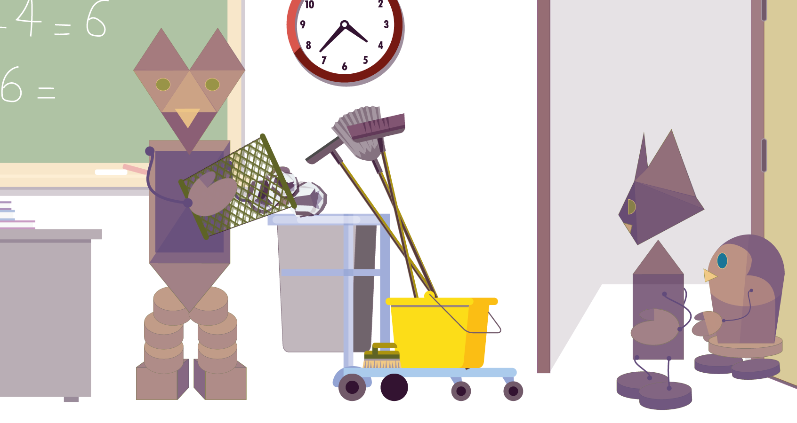
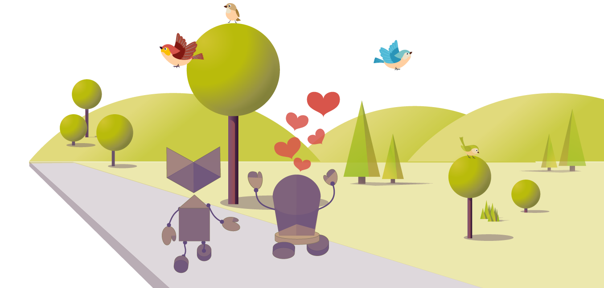

Le mystère poubelle
C'est l'heure du déjeuner, et les élèves sortent de classe.
Doré semble avoir peur de la corbeille à papier.
Mifa se demande pourquoi.
— Pourquoi as-tu regardé la poubelle de cette façon ? demande Mifa.
— Quand on jette un papier dans la corbeille, le lendemain il a disparu !
— Il y a un trou noir dans la poubelle ! conclut Doré.
— Mais les trous noirs sont dans l'espace, avec les étoiles !
Pas dans les poubelles, répond Mifa en réfléchissant.
— On va faire une enquête !
— Ouiiii !
— Mais d'abord on va manger, non ?
À la cantine, la dame de service leur dit :
— Il faut manger pour bien grandir, les enfants !
— Et pour éviter de faire du gâchis comme ça ! dit-elle en vidant des restes dans un sac poubelle.
Après le repas, Doré et Mifa vont dans la cour.
— Non, non, petit oiseau ! s'écrie Doré.
Le plastique ne se mange pas !
Que doit faire Doré avec l'emballage qu'il a ramassé ?
Dès que la sonnerie annonce la fin de la journée d'école, Doré chuchote à Mifa : — On reprend notre enquête !
— On va surveiller la corbeille, pour voir ce qui se passe !
— Attention les enfants ! dit un homme qui entre dans la classe en poussant un chariot.
Doré et Mifa l'observent tandis qu'il vide la corbeille dans le bac du chariot.
Quand l'homme repart…
Doré chuchote :
— On va le suivre !
Derrière l'école, l'homme vide le bac dans un conteneur au couvercle jaune.
On apprend plein de choses, quand on est curieux ! se dit Mifa.
Sais-tu pourquoi il y a différentes couleurs de poubelle ?
Puis Doré et Mifa voient la dame de la cantine jeter un sac poubelle…
Mifa lui demande :
— Pourquoi mettez-vous ces déchets dans la poubelle avec le couvercle rouge ?
— Les déchets de la cantine sont des restes d'aliments : on ne peut pas les recycler.
Recycler, pas recycler…
Mifa s'énerve.
Elle est fatiguée et ne comprend plus rien.
— Regarde ! dit Doré.
L'homme fait rouler la poubelle jaune jusqu'à l'arrière du camion.
— Les déchets de papier vont dans le camion !
— Excusez-moi, monsieur. Où vont les déchets, ensuite ? demande Mifa.
— Les poubelles jaunes contiennent surtout des papiers et des emballages, répond-il…
On les emmène au centre de recyclage.
— Vous ne prenez pas les poubelles au couvercle rouge ? demande Doré.
— Quelqu'un viendra les chercher avec un autre camion. Les déchets des poubelles rouges ne sont pas recyclables : ils vont à la déchetterie pour être brûlés.
Sais-tu ce que veut dire « recycler » ?
— Maintenant je sais pourquoi les objets jetés dans la corbeille disparaissent.
— Oui : ils vont à la déchetterie ou au centre de recyclage.
— Et c'est important de mettre les déchets dans les poubelles plutôt que par terre, pour que le monde reste propre.
— Et pour que les oiseaux soient en bonne santé ! s'écrie Doré.
